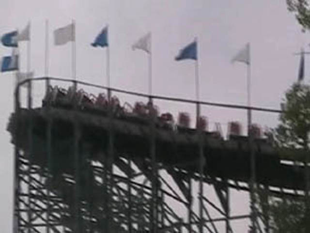

| |

Villain Review

For this review, we've traveled back in time to my visit to Geauga Lake. After getting into the seats and pulling down the lap bars, we roll into a turn and up the lifthill. During this turn, I remember getting a few laterals that didn't feel that good. So while going up the lifthill, I was very afraid of what Villain would be like when I was ACTUALLY riding it. Then once we crest the lifthill, it's staight down the first drop we go. It's actually a really fun first drop. We gain quite a bit of speed from it. Then, we go up into another big hill. We think it's going to hurt because of a sort of has a slight curve to it, but it doesn't. Then we drop back down, gaining back our speed. After dropping, we go through a little bit of straight track. So after flying on through the straight track, we rise up into another big hill. However, when we reach the top, we see a bunch of flags. And as we reach the top. We are whisked away into a left turnaround. From this part of the ride, you got a nice view of Geauga Lake. Then you went straight into this funky drop that was half drop and half turn. After wards, we gradually rise up and just fly under Villain's structure before rising up into another big hill. There, we went straight into another turnaround. This time, you mostly got a view of trees. However, after the turnaround, we go through another section of straight track. As we go through it, I told Logan, "I might actually get airtime here". To our dissapointment, we didn't get sh*t. Then after this part of the ride, it started to get some jackhammering. Then we rose up into a small hill, before just dropping back into the structure. Then we rise back up to dip back down and then back up into another turnaround. We then head through another couple of bunny hops under the structure that provide us with no airtime whatsoever. Then we finally glide into the brake run (Which was under the rides structure). While it never hurt like the bitch I thought it would, I kind of found it to be dull and boring (Especially compared to Big Dipper). While it wasn't terrible, it wasn't great either. So, you never missed much with the Villain.
5/10
Location: Geauga Lake
Opened: 2000
Died: September 16, 2007
Built by: Custom Coasters
Last Ridden: July 23, 2007
Villain Photos

|